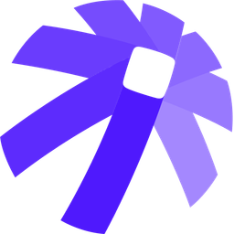
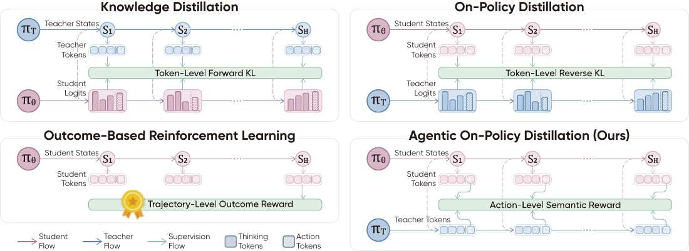
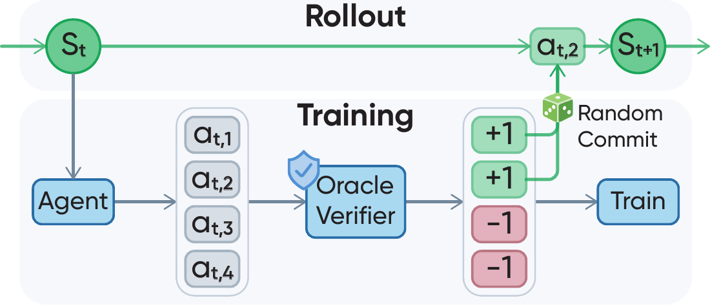
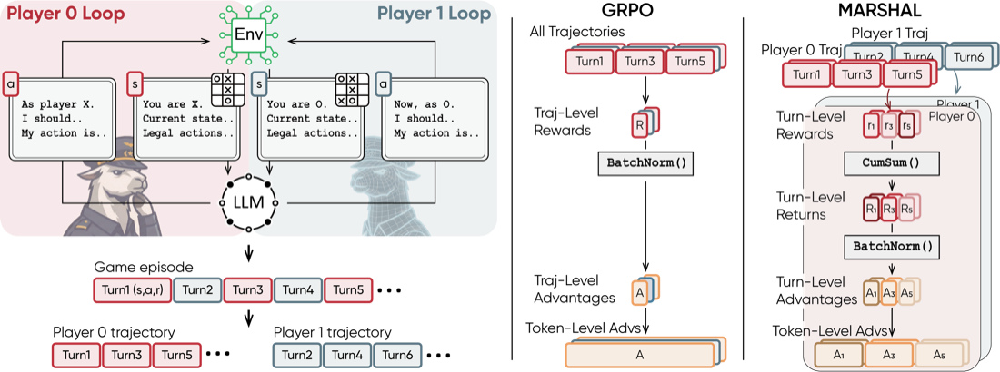
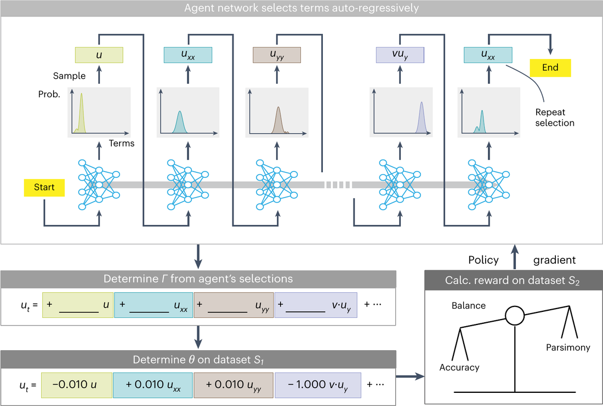
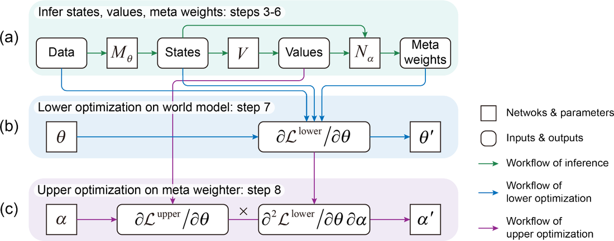
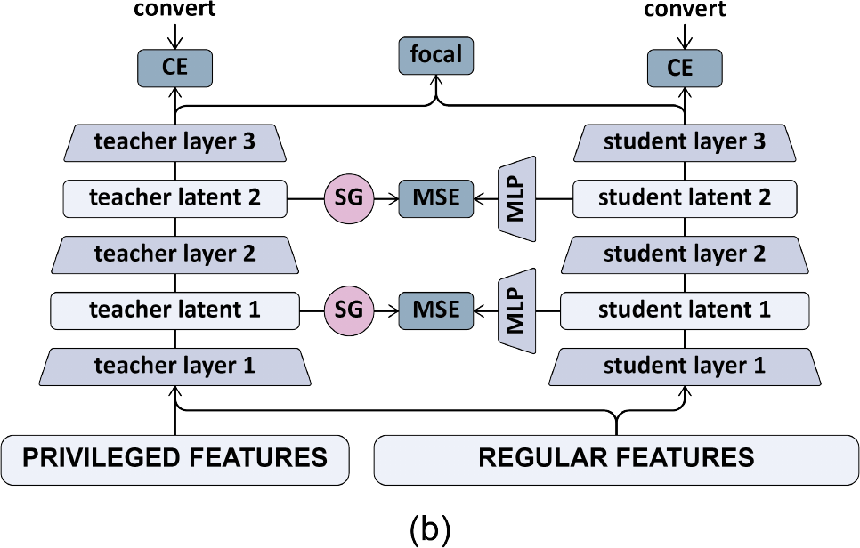

Infinigence AI
Jun. 2025 – Sep. 2025
Algorithm Engineer, Algorithm Development Group
Worked on LLM post-training and reinforcement learning for multi-agent games, leading to MARSHAL (ICLR 2026).
I am a Ph.D. student in Information and Communication Engineering at Tsinghua University, advised by Prof. Yu Wang, Dr. Chao Yu, and Prof. Xiao-Ping Zhang. Previously, I received my master's and bachelor's degrees from Beihang University, where I was advised by Prof. Yue Deng during my master's studies.
My research focuses on LLM agents and reinforcement learning. I study how agents can improve themselves through interaction and feedback. My recent work explores action-level credit assignment, process rewards, and multi-agent systems. My earlier research spans world model learning, scientific equation discovery, and privileged feature distillation.
Building agents that continuously improve themselves through interaction.
Equal contribution. My name is shown in bold.

Preprint2026
Distilling agent decisions from black-box teachers through semantic action agreement at student-encountered states.

Preprint2026
Turning task-solving oracles into action-level process rewards for learning through interaction.

ICLR2026
Learning generalizable multi-agent reasoning through self-play in cooperative and competitive games.

Nature Computational Science2025
Discovering and validating governing equations from observations through bi-level optimization.

NeurIPS2023
Learning task-aware world models by adapting the importance of training samples to downstream control.

KDD2025
Transferring privileged features into conversion prediction models through adaptive distillation and latent alignment.

Jun. 2025 – Sep. 2025
Algorithm Engineer, Algorithm Development Group
Worked on LLM post-training and reinforcement learning for multi-agent games, leading to MARSHAL (ICLR 2026).
Jan. 2024 – Jun. 2025
Algorithm Engineer, TikTok
Worked on LLM coding evaluation and privileged feature distillation for conversion prediction. The distillation work was published at KDD 2025 and deployed in production.
Sep. 2025 – Present
Ph.D. in Information and Communication Engineering
Advisors: Prof. Yu Wang, Dr. Chao Yu, and Prof. Xiao-Ping Zhang
Sep. 2021 – Jan. 2024
M.Eng. in Control Science and Engineering
Advisor: Prof. Yue Deng
Sep. 2017 – Jun. 2021
B.Eng. in Aircraft Control and Information Engineering